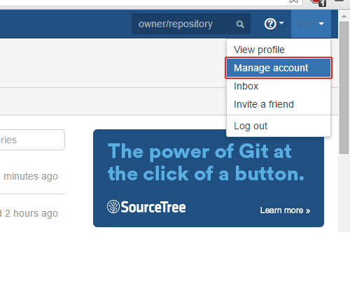
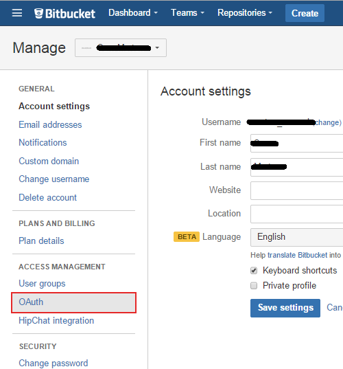
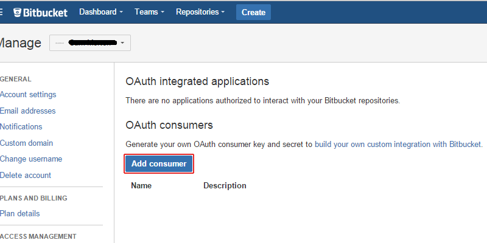
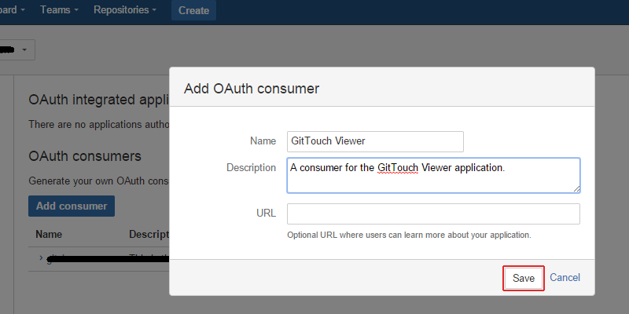
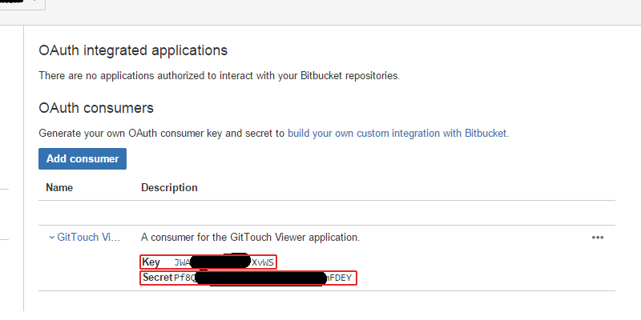
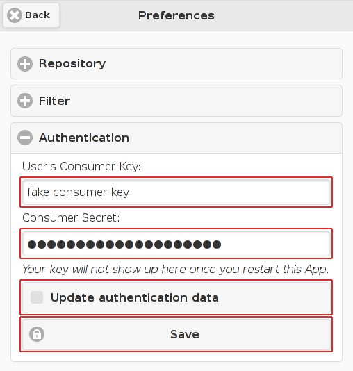

Presented by: SnippetsJam
Presented to you by: SnippetsJam
Developers: Liang Chen, Sai Dong, Sam Merten
App logo is designed by Liang Chen.
This App GitViewer is under Apache License.
This App is built with JQuery, JQuery Mobile, D3.js, and PhoneGap (Cordova).
How to get your consumer key and secret from BitBucket.org
This tutorial shows the step-by-step guide of acquiring a consumer key and secret for BitBucket. After the following steps, you will be able to view your private BitBucket repositories.

Figure: "Manage account" in the drop-down menu of the user account icon.

Figure: "OAuth" link on the Account Management page.

Figure: "Add consumer" button on the OAuth page.

Figure: OAuth consumer description dialog.

Figure: Generated consumer key and secret.

Figure: Authentication section of the Preferences Page.